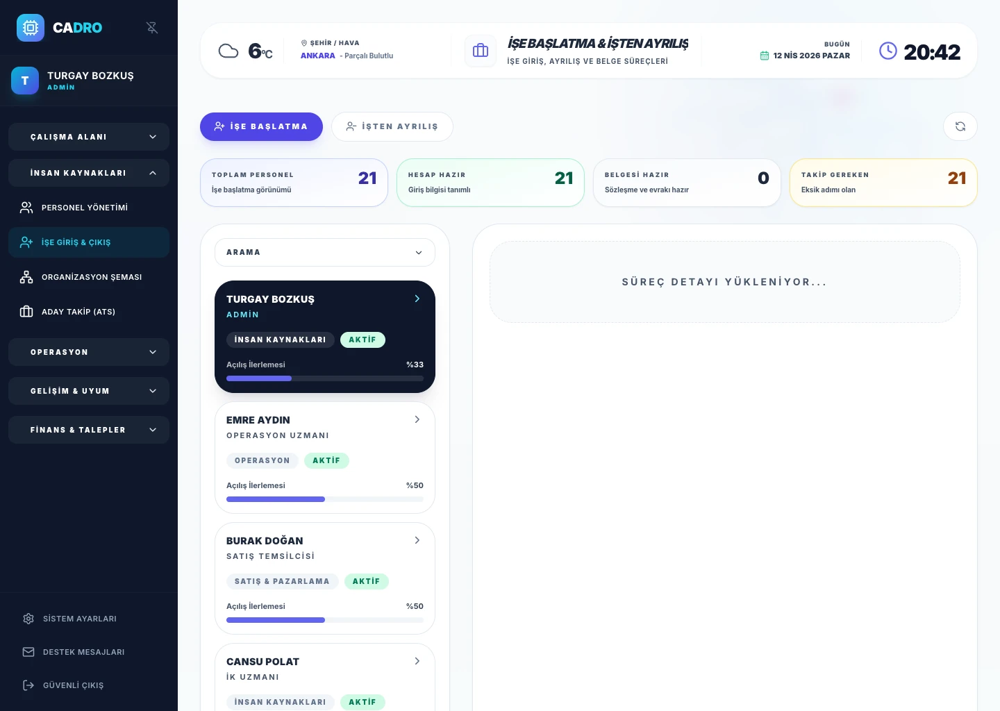

İlk gün görevleri
Cihaz teslimi, hesap açılışı, ekip tanıtımı ve zorunlu belge kontrolü gibi temel adımlar.

ÜCRETSİZ İK Şablonu
Yeni çalışan işe başlatma sürecini ilk gün, ilk hafta ve ilk ay adımlarıyla standartlaştırmak için sade bir işe giriş kontrol listesi yapısı.

NE İÇERİR?
Cihaz teslimi, hesap açılışı, ekip tanıtımı ve zorunlu belge kontrolü gibi temel adımlar.
Eğitimler, yönetici görüşmeleri ve rol bazlı adaptasyon görevlerinin planlanması.
Beklentiler, performans uyumu ve eksik adımlar için gözden geçirme alanı.
Hızlı işe alım yapan ekipler, operasyonel işe giriş adımlarını standartlaştırmak isteyen şirketler ve yeni çalışan deneyimini iyileştirmek isteyen İK ekipleri için uygundur.
NE ZAMAN KULLANILIR?
Bu sayfa, şablon ihtiyacını netleştirir; devamında işe giriş modülü ile aynı akışı dijital olarak kurgulamanıza yardımcı olur.